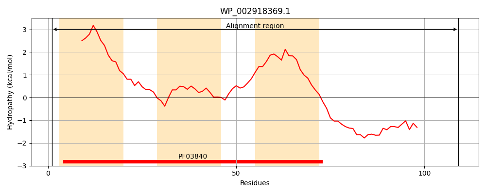
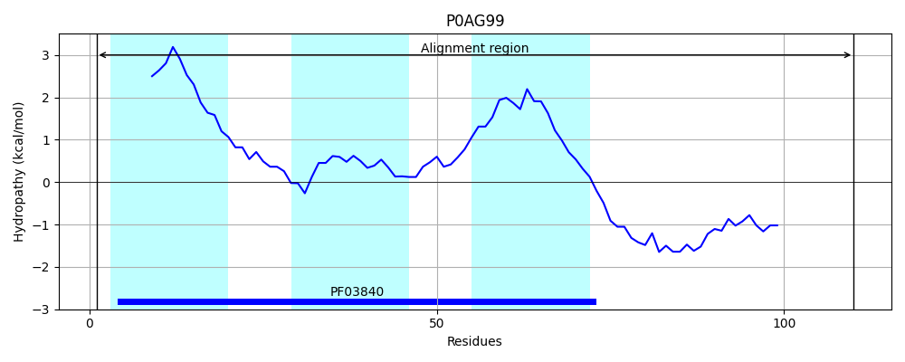
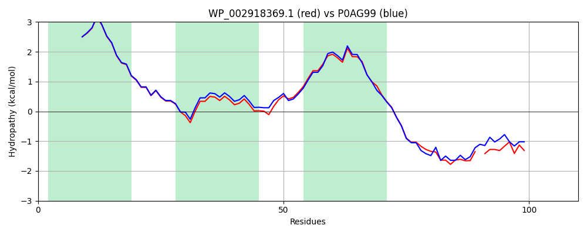

Hit Accession: P0AG99
Hit TCID: 3.A.5.1.1
Hit Description: gnl|BL_ORD_ID|8855 gnl|TC-DB|P0AG99|3.A.5.1.1 Protein-export membrane protein secG - Escherichia coli.
Mach Len: 110
e:0.000000
Query TMS Count : 3
Hit TMS Count: 3
TMS-Overlap Score: 2.700000
Predicted Substrates:CHEBI:8526;protein polypeptide chain
BLAST Alignment:
| Protein Hydropathy Plots: | |
|---|---|
|  |  |
Pairwise Alignment-Hydropathy Plot: | |
|  | |